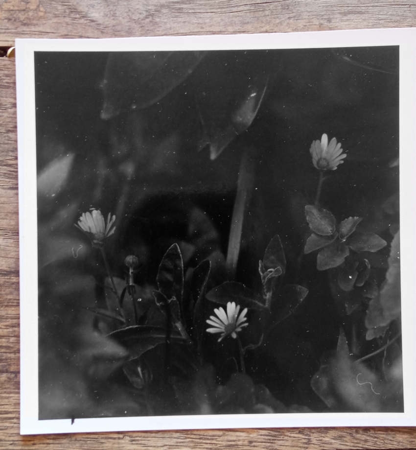
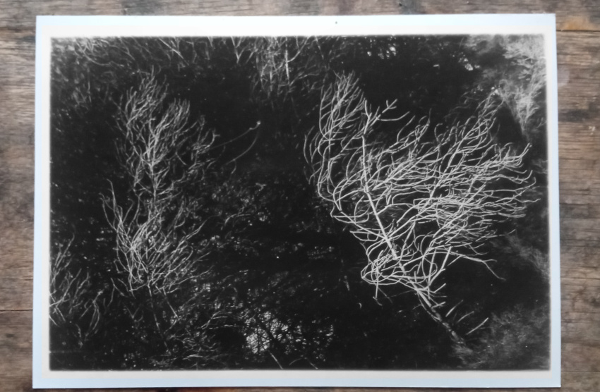
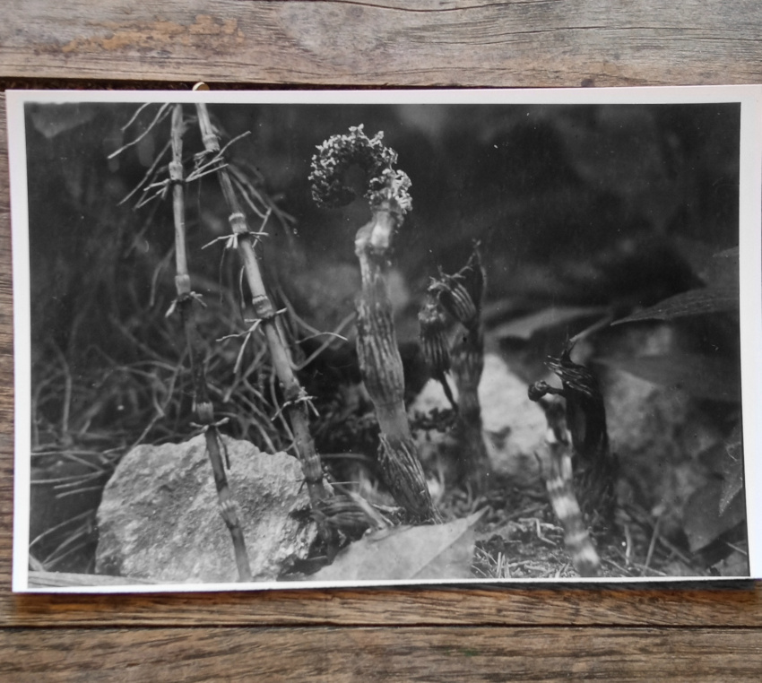

Sometimes I find that I give advice that I didn't know I had in me. It happened yesterday. My daughter said she is overwhelmed by the news, that she is reading too much of it and it affects her badly. I said that she should be critical about what she reads: What is real news, something that happened, and what is just some sensationalist piece of distraction, something that someone wants you to hear, or wants someone to hear. noise. Some of the problems with populism in this world we are living in, is that it is insincere, it is loud, and it doesn't care about truths. It is there to win, and no price is too high.
The language of art and the language of speaking about art are piercing, and I think that it can communicate in a way that is especially important. Really observing is what it is about, really noticing. and unlike scientific observation, this noticing is creative observation, it creatively exposes, intelligently exposes what then cannot be denied. To consume art is to give attention, an attention that’s different to the attention given as a passive spectator of a television show or an online video post. Art is written in a language both familiar and cryptic, we need to create the space and quietness to tune in.

I am entering the game late, that is a familiar place for me, as most games I entered either young and unprepared, or late and unassuming. I am used to see art from a personal point of view, as a mark of an individual, the artist. The body of work a continuous thread. The mature artist shows a coherent thread. This game though, is a different one, art is a voice, a language. The artist has a thing to communicate, it is urgent and inevitable. It is political, it shows a thing in the world. The artist craftly presents it. The message here is read clearly. Art is a form of communication.

Conceptual art has been around for more than a century. The pioneers were dealing with the limits of art, with what is art and what is not. As a result, I feel, that all art then became conceptual, it is no longer possible to create art that is not conceptual, and from a certain point it became impossible to create art that is not political, just the same as when some great artist started focusing on light in their paintings, light became an element that is present in all the paintings that followed. Ofcourse there can be varying degrees of social/political/environmentalist concept communicated in the work, but ignoring it all together is also a kind of a statement, a political one.
Perhaps this stems from the fact that no work exist in a vacuum. All work is of an age, and of a place. A very personal art, can communicate universality and exist beyond an age, but nonetheless, it is of an age, and will have that imprinted, embedded.
